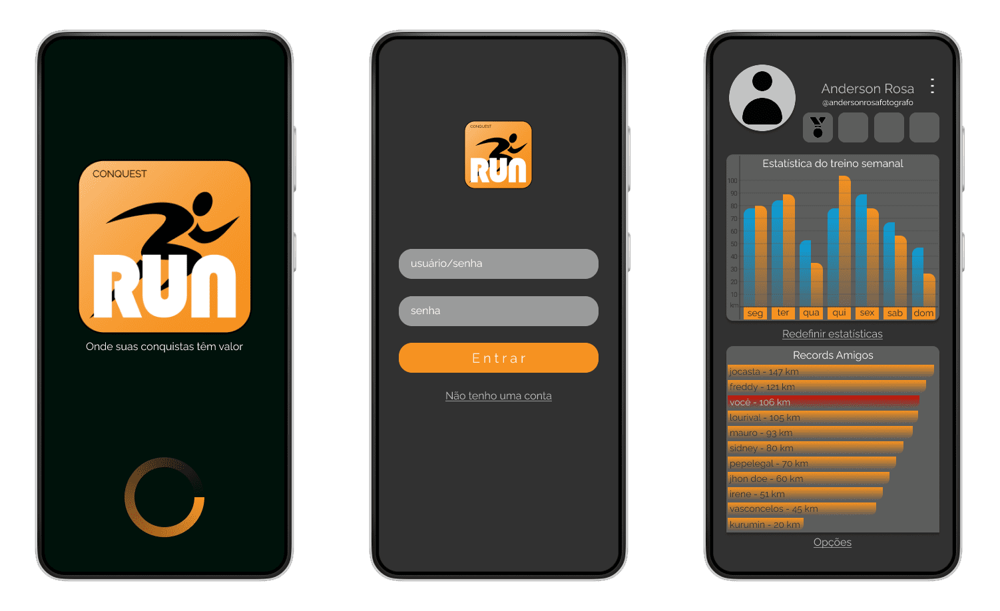

Pontapé inicial
Um dos projetos iniciais do curso iniciado na disciplina de Padrões de Projetos de Sítios I refere-se à criação de páginas aplicando os diversos conceitos demostrados e aprendidos em aula, esses conceitos foram compilados em um site simples com navegação por menu horizontal criado com botões e pode ser visto clicando aqui.
Mesmo não particitando da diciplina de Leitura e Produção de Texto cujo objetivo é iniciar um projeto de uma empresa, estabelecer seu funcionamento e desenvolver; o site, compatível com smartphone, tablet e desktop; e também um aplicativo, eu, juntamente com alguns colegas desenvolvi usando o software ¹Figma para desenvolver um protótipo interativo do aplicativo idealizado pelo grupo.
Tornar o ato de se exercitar um hábito, como; tornado-o mais atrativo, emocionante e agradável. Fazer com que amigos se desafiem a cada vez fazer mais exercícios.
O aplicativo possui uma área pode-se comparar o rendimento entre usuários da plataforma, trazendo um ranking pessoal e em compraração dom sues amigos, que podem desafiar ou ser desafiados em competições criadas, há uma área onde os amigospodem ser convidados a participar da sua rede.
Abaixo é mostrada a logo criada e em seguida algumas telas do aplicativo.

¹ Aplicativo que em 2022 possuia uma licença de uso grátis limitada, e havia recentemente sido comprada pela gigante Adobe. Se o link do Figma não funcionar poderá ser por sua fusão com a Adobe e deverá ser procurardo no site desta.